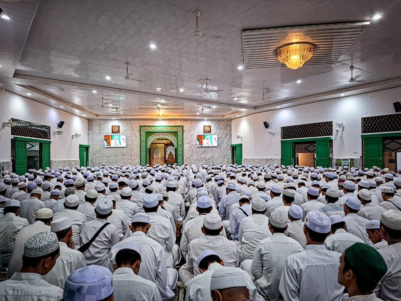
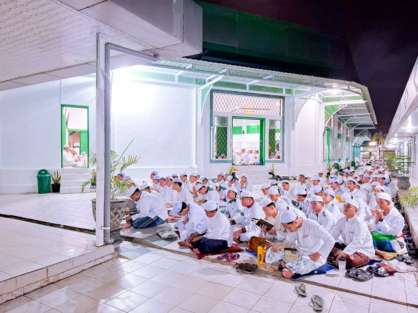
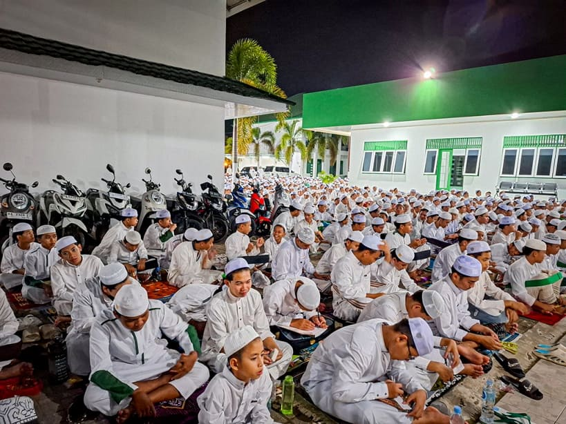

<div id="ajax-page" class="ajax-page-content">
    <div class="ajax-page-wrapper">
        <div class="ajax-page-nav">
            <div class="nav-item ajax-page-prev-next">
                <a class="ajax-page-load" href="Kegiatan-03.html"><i class="lnr lnr-chevron-left"></i></a>
                <a class="ajax-page-load" href="Kegiatan-01.html"><i class="lnr lnr-chevron-right"></i></a>
            </div>
            <div class="nav-item ajax-page-close-button">
                <a id="ajax-page-close-button" href="#"><i class="lnr lnr-cross"></i></a>
            </div>
        </div>

        <div class="ajax-page-title">
            <h1>MAJELIS MALAM SELASA</h1>
            <h4>di Pondok Pesantren Nurul Muhibbin Barabai</h4>
        </div>

        <div class="row">
            <div class="col-sm-8 col-md-8 portfolio-block">
                <div class="portfolio-page-video embed-responsive embed-responsive-16by9"> <!--embed-responsive-16by9-->
                <iframe width="607" height="342" src="https://www.youtube.com/embed/kGQmkq0lhXU?autoplay=1&controls=0&loop=1" title="Majelis Malam Selasa  13 Januari 2025" frameborder="0" allow="accelerometer; autoplay; clipboard-write; encrypted-media; gyroscope; picture-in-picture; web-share" referrerpolicy="strict-origin-when-cross-origin" allowfullscreen></iframe>                
                </div>

                <div class="owl-carousel portfolio-page-carousel">
                    <div class="item">
                        
                        <p>Kegiatan Majelis Ta'lim Malam Selasa (di dalam mushalla)</p>
                    </div>
                </div>
                <div class="owl-carousel portfolio-page-carousel">
                    <div class="item">
                        
                        <p>Kegiatan Majelis Ta'lim Malam Selasa (di samping mushalla)</p>
                    </div>
                </div>
                <div class="owl-carousel portfolio-page-carousel">
                    <div class="item">
                        
                        <p>Kegiatan Majelis Ta'lim Malam Selasa (di samping asrama)</p>
                    </div>
                </div>

                <!--
                <div class="portfolio-page-video embed-responsive embed-responsive-9by16"> -->   <!--embed-responsive-16by9-->
                <!--    <iframe class="embed-responsive-item" src="https://player.vimeo.com/video/97102654?autoplay=0"></iframe>
                
                        <iframe width="342" height="607" src="https://www.youtube.com/embed/mupBIK09hzo?autoplay=1&controls=0&loop=1" title="KH  Muhammad Bakhiet  AM  Barabai  Malam Selasa  18 November 2024" frameborder="0" allow="accelerometer; autoplay; clipboard-write; encrypted-media; gyroscope; picture-in-picture; web-share" referrerpolicy="strict-origin-when-cross-origin" allowfullscreen></iframe>                </div>
                -->

                <script type="text/javascript">
                    jQuery(document).ready(function($){
                        $('.portfolio-page-carousel').imagesLoaded(function(){
                            $('.portfolio-page-carousel').owlCarousel({
                                smartSpeed:1200,
                                items: 1,
                                loop: true,
                                dots: true,
                                nav: true,
                                navText: false,
                                margin: 10,
                                autoHeight:true
                            });
                        });
                    });
                </script>
            </div>

            <div class="col-sm-4 col-md-4 portfolio-block">
                <!-- Project Description -->
                 
                <div class="project-description">
                    <div class="block-title">
                        <h3>Diskripsi</h3>
                    </div>

                   <style>
                        p  {
                            text-align: justify;
                        }
                        ol {
                            margin: 0 18px;
                        }
                        ul {
                            margin: 0 18px;
                        }
                        li {
                            margin-bottom: 5px;
                        }
                        strong {
                            color: #009a4c;
                        }
                    </style>

                    <p>Majelis Taklim <strong>Nurul Muhibbin</strong> didirikan pada tahun <strong> 1993</strong>, bertepatan dengan peringatan haul Al Imam Al Faqihul Muqaddam. Nama <strong> "Nurul Muhibbin"</strong> berarti <strong>"Cahaya Para Pencinta"</strong> menggambarkan kecintaan terhadap ulama, habaib, dan ilmu. </p>
                    <p>Nama ini terinspirasi dari hadis Nabi yang menegaskan pentingnya peran ilmu dalam kehidupan:
                            <blockquote class="quote"> 
                                <div class="Teks_Arab_Kufi">
                                    <p>كُنْ عَالِمًا أَوْ مُتَعَلِّمًا أَوْ مُسْتَمِعًا أَوْ مُحِبًّا وَلَا تَكُنِ الخَامِسَةَ أي مُبْغِضًا فَتَهْلِك</p>
                                </div>
                                    "<em>Jadilah engkau orang berilmu, atau orang yang menuntut ilmu, atau orang yang mau mendengarkan ilmu, atau orang yang menyukai ilmu, dan janganlah engkau menjadi orang yang kelima maka kamu akan celaka</em>."
                            </blockquote>
                    </p>
                    <p>Majelis Taklim ini awalnya berlokasi di Pon-Pes <strong> Hidayaturrahman</strong> Barabai. Dengan jumlah peserta yang terus bertambah setiap pertemuan, majelis ini akhirnya dipindahkan ke Pondok Pesantren <strong> Rahmatul Ummah</strong>, yang kemudian berkembang menjadi Pondok Pesantren <strong> Nurul Muhibbin</strong>. Keberadaan majelis ini menarik ribuan jamaah dari berbagai daerah, menjadikannya pusat keilmuan yang populer di Kecamatan Barabai dan sekitarnya.</p>
                    <br>

                    <div class="block-title">
                        <h3>Susunan Kegiatan</h3>
                    </div>
                    <p>Kegiatan pengajian <strong> Majelis Nurul Muhibbin</strong> rutin dilaksanakan setiap Malam Selasa pukul 20.15 hingga 21:45 waktu setempat. </p>
                    <p>Acara dimulai dengan pembacaan qasidah seperti <em> Ilahi Nas'aluk </em> dan <em> Maulana Ya Maulana </em> yang dipimpin oleh <strong> Ustadz Muhammad Yamani </strong>, dilanjutkan dengan pembacaan tahlil oleh <strong> KH. Wajihuddin </strong> dan qasidah <em> Ya Sayyidi Ya Rasulullah</em>. Kemudian, sebelum memulai pembacaan kitab <strong> Riyadus Shalihin</strong>, dilakukan tawasul untuk para wali Allah yang dipimpin oleh seorang habib yang hadir.</p>
                    <p><strong> Guru Bakhiet</strong>, sebagai tokoh sentral dalam majelis ini, menyampaikan ceramah agama yang mudah dipahami oleh jamaah. Dengan menggunakan metode lisan yang jelas dan bahasa sederhana, beliau menjelaskan isi kitab dengan mendalam, sehingga jamaah dari berbagai latar belakang usia dapat mengerti dengan baik. Pengajian ini ditutup dengan doa yang dibacakan oleh habib yang hadir.</p>
                    <p>Keunikan dan keistimewaan <strong> Majelis Taklim Nurul Muhibbin</strong> tidak hanya terletak pada materi yang disampaikan, tetapi juga pada jumlah jamaah yang mencapai ribuan. Jamaah datang dari berbagai pelosok desa, kota, bahkan luar daerah Hulu Sungai Tengah. </p>
                    
                    <!-- Share Buttons -->
                    <div class="share-buttons">
                        <div class="block-title">
                            <h3>Bagikan</h3>
                        </div>
                        <div class="share-buttons-group">
                            <a href="https://www.facebook.com/share.php?u=psbnmb.ct.ws" target="_blank" class="btn"><i class="fab fa-facebook-f"></i> </a>
                            <a href="#" target="_blank" class="btn"><i class="fab fa-twitter"></i> </a>
                            <a href="#" target="_blank" class="btn"><i class="fab fa-dribbble"></i> </a>
                        </div>
                    </div>
                    <!-- /Share Buttons -->
                </div>
                <!-- Project Description -->
            </div>
        </div>
    </div>
</div>
